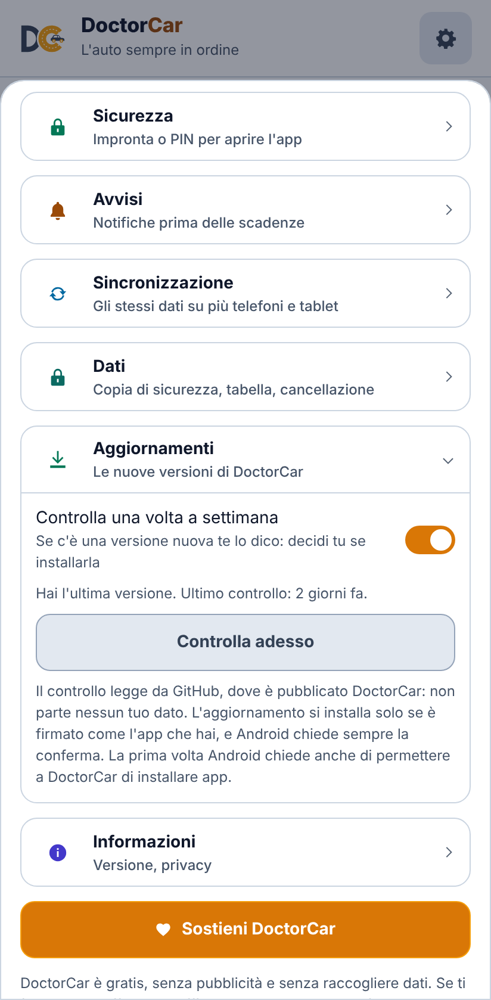
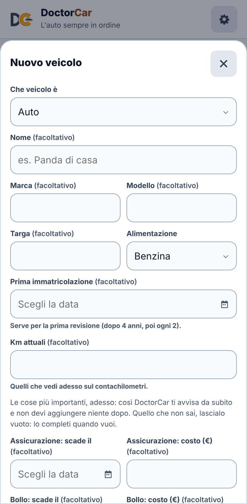
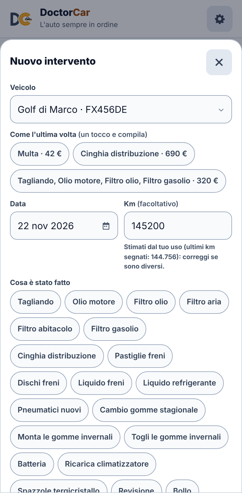
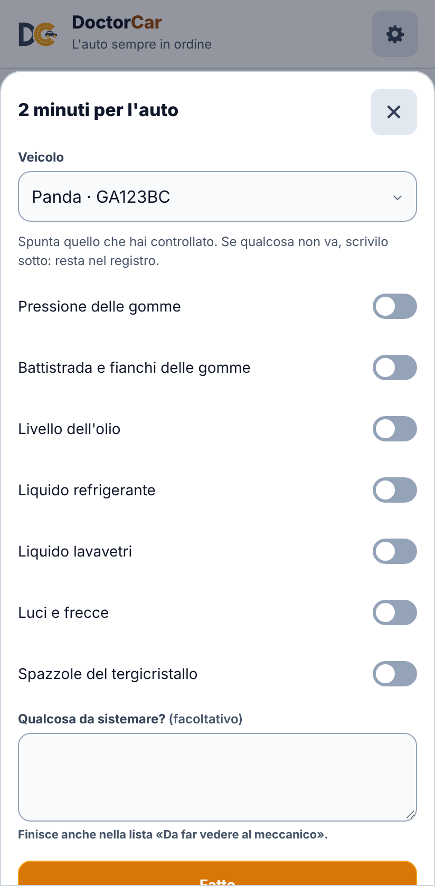
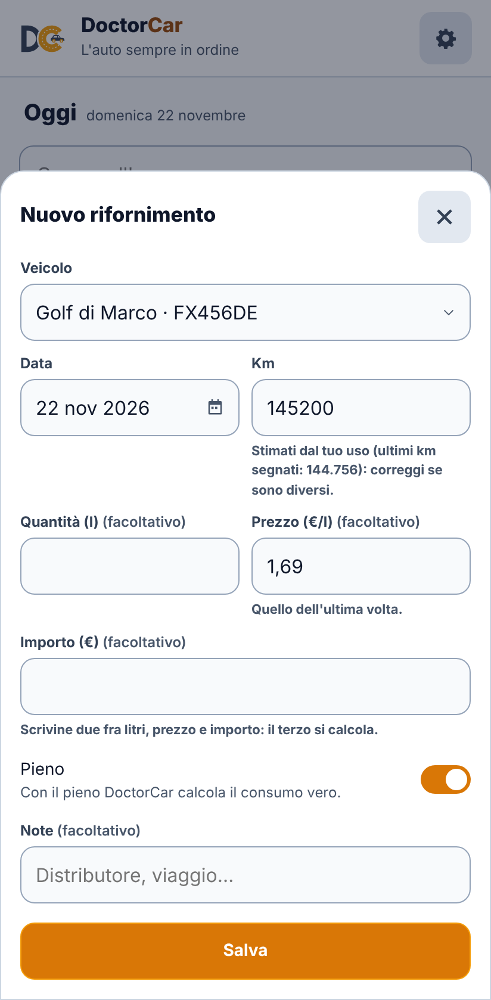
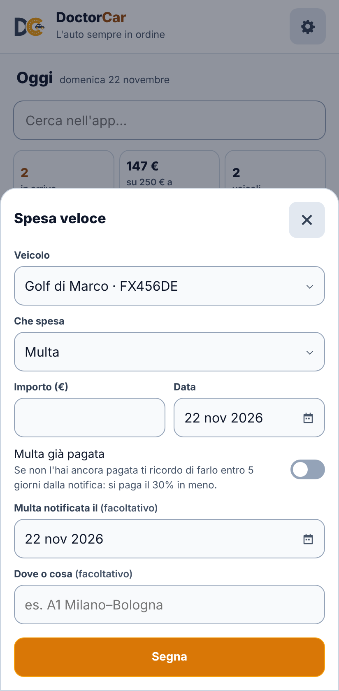
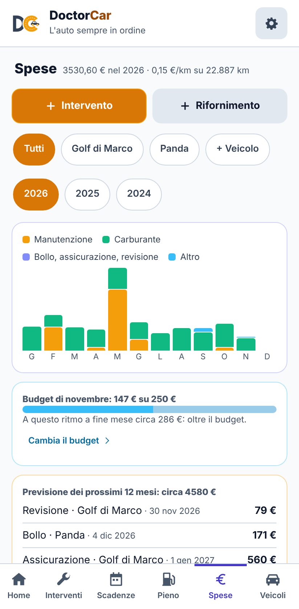
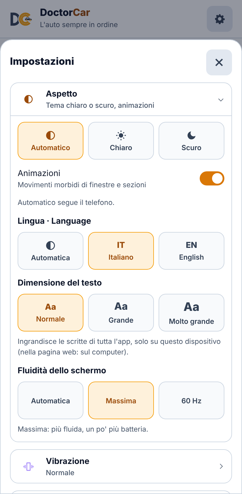
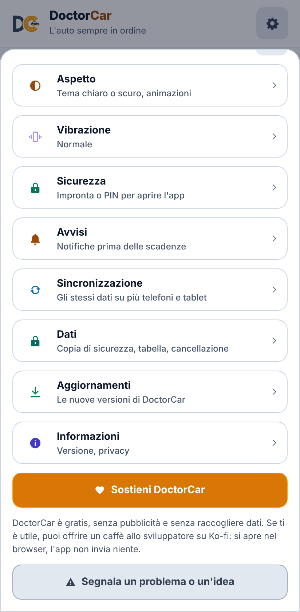

DoctorCar
L'auto sempre in ordine
Tutorial
Come si fa, passo per passo: una scheda per ogni cosa
Versione dell'app {{VERSIONE}} · aggiornato il {{DATA}}
La prima volta, su un telefono Android 10 o più recente.

Quando esce una versione nuova (DoctorCar controlla da solo una volta a settimana).

Al primo avvio, o da Veicoli.

Quando in Home c'è «Completa una scadenza».

Quando non sai dove sta.

Per vedere tutto di un'auto.

Dopo il meccanico, il gommista, la revisione…
Per il tagliando di ogni anno.
Per tenere la prova di quello che hai pagato.

«Quando ho cambiato le pastiglie?»

Hai pagato il bollo o fatto la revisione.

Per qualcosa che non c'è ancora.
Documenti e permessi con scadenza.
Per vederla anche nel calendario del telefono.
Estive, invernali o 4 stagioni.
A novembre e ad aprile.

Una volta al mese, 2 minuti.

Senti un rumore o si accende una spia.
Il meccanico ha risolto.

Olio, lampadine, spazzole che tieni da parte.
Prima di andare al negozio di ricambi.

Al distributore.
Ogni tanto, anche senza fare il pieno.

Prima di partire, o per dividere le spese.

Pedaggio, parcheggio, lavaggio, multa.

Per tenere sotto controllo le spese.
Appena sceso dall'auto.
Parcheggio a pagamento o disco orario.
Nell'app Android.
Senza aprire l'app.
Per fare prima.
Per avere gli stessi dati in famiglia.
Più persone sugli stessi dati.
Per escluderlo.

Prima di cambiare telefono, e ogni tanto.
Su un telefono nuovo.
Per non pensarci più (app Android).
Da Fuelio, Drivvo, Simply Auto, aCar, Fuelly.
Per vendere l'auto o andare dal meccanico.

Per adattare l'app.

Per usare DoctorCar in inglese (o tornare all'italiano).
Per proteggere i dati.

Per scriverci.
Se l'app ti è utile.
Prima di vendere o regalare il telefono.